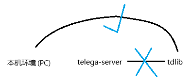

Table of Contents
1. 一步一步调试出telega-server的登录登不上的问题
1.1. 基本介绍
讲述了在WSL环境下，调试telega-server过程，终于是解决了telega-server的登录问题
提前声明: 我自己不会这些代理的事情，我自己只想在上面听音乐、看沙雕图、看在花新闻 提前声明: 我自己不会这些代理的事情，我自己只想在上面听音乐、看沙雕图、看在花新闻 提前声明: 我自己不会这些代理的事情，我自己只想在上面听音乐、看沙雕图、看在花新闻
1.2. 问题描述
在编译与安装了最新的tdlib后(https://github.com/tdlib/td.git)
同时安装了telega.el并build出telega-server后
在GNU Emacs里面执行telega函数
进入telega.el先是会这样:
Auth WaitPhoneNumber =========================modeline============================ phone number: +
然后在输入了账号名后，会在 一瞬间，立即 变成这样
Connecting.... =========================modeline============================
并且永远都是 Connecting....
Connecting.... =========================modeline============================
1.3. 解决方法
其实是这个原因

然后设置zevlg作者，在telega.el下提供的telega-proxies变量就行了
;; :port填你主机启动代理服务的端口，一般来说好的
(setq telega-proxies
(list
`(:server "127.0.0.1"
:port 4781
:enable t
:type (:@type "proxyTypeSocks5"
:username ""
:password ""))))
1.4. 调试过程(TLDR)
1.4.1. 先怀疑是图形桌面服务器的问题，结果不是
一开始我先怀疑的可能是图形桌面服务器的问题，因为现在的环境是 WSL-archlinux是用账户名 登录的，但是在 archlinux下是用二维码 登录的
于是找了很多很多资料，又设置编译flag啊 --with-x-tookit=gtk3, --with-rsvg
又去telega.el群聊找问题啊，但是作者zevlg在群里面大意说 “只要 telega-use-images 有非空数值，就可以用二维码登录”
我看了下我的
; C-h v telega-use-images scale rotate90
确实是 telega-use-images 有非空数值，于是应该是用二维码登录的呀？
然后我就反复思考，还是思考不出来
我唯一能判断的原因，应该是WSLg是RDP转发X11时，出现了一些环境问题导致的。
1.4.2. 到怀疑可能是代理的问题，结果也不是
于是我尝试使用账户名登录，但只要一输入手机号按回车后，它就一定会
Connecting.... =========================modeline============================
于是在我当前的环境下，尝试了与服务器通信
<!-- curl -v https://api.telegram.org -->
<html>
<head><title>302 Found</title></head>
<body>
<center><h1>302 Found</h1></center>
<hr><center>nginx/1.18.0</center>
</body>
</html>
发现确实是通的，但现在在telega-server(telega.el)下，就一直都是
Connecting.... =========================modeline============================
说明不可能是代理的原因
1.4.3. 最后确定了，原来是环境问题
telega-server与tdlib进行通信的过程中，在此过程里，没有读取本机系统代理环境变量导致的
于是打开telega的调试
(setq telega-debug t) (setq telega-tdlib-log-level 4)
去看 *Message* 先是发现在Auth WaitPhoneNumber时，一旦输入账号，就会出现这样的日志
OUTPUT: send 33 (:@extra 1 :@type "disableProxy")
然后确定下来了，应该就是proxy代理的问题，而且一定是telega-server与tdlib进行通信的过程中 在此过程里 没有读取本机系统代理环境变量导致的
于是去telega.el群聊里找作者的历史记录，很巧的是早在23年时就已经有一西班牙老哥/老姐就遇到了这个问题
顺带一说，作者zevlg真的贼热心，曾经在很久之前就已经很热心地回答过了这个问题
附带一下当时的聊天记录(直接从telega.el中复制粘贴出来的)
JJ edited 23.03.24 -'11 In spain are blocking acces to telegram 1😱(C) 23.03.24 Evgeny Zajcev() • @zevlg (owner) -' @jjibagar> In spain are blocking acces to telegram telega.el has support for proxies 23.03.24 JJ • @jjibagar -' @zevlg> telega.el has support for proxies vpn? 23.03.24 Evgeny Zajcev() • @zevlg (owner) -' @jjibagar> vpn? No, native Telegram proxies 23.03.24 JJ • @jjibagar -' @zevlg> No, native Telegram proxies where i can find info for this? 23.03.24 Evgeny Zajcev() • @zevlg (owner) -' @jjibagar> where i can find info for this? See docstring for the telega-proxies user option 1👍(L) 23.03.24 JJ • @jjibagar -' @zevlg> See docstring for the telega-proxies user option ok, thanks
于是设置了 telega-proxies 变量，就像 ** 解决方法 这里设置的一样
然后就有从
Connecting.... =========================modeline============================
就变成了
Ready =========================modeline============================
于是终于可以登录上去了……………..